St. Stephen Church and School History in Niles Ohio

Photo taken of St. Stephen's Catholic church in Niles, Ohio. Dated Aug. 1975
{kind=link}
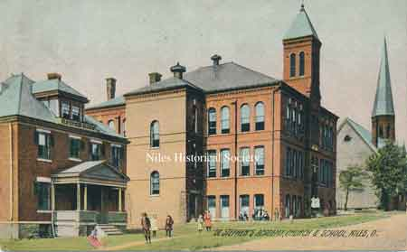
St. Stephen's Roman Catholic Church, Academy and School as it appeared in 1905.S
{kind=link}
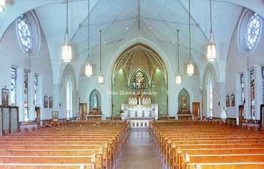
The interior of St. Stephen's Catholic Church after the remodeling in 1953, the 100th year of the founding of the parish
{kind=link}
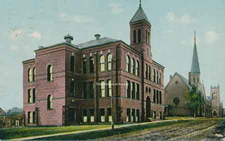
Another postcard view of the school and church looking north along Arlington Avenue.
{kind=link}
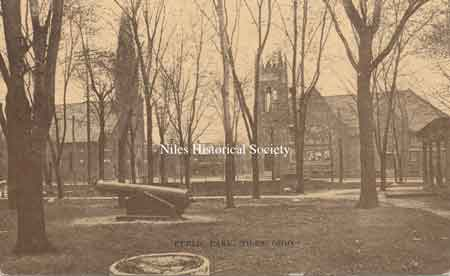
Looking west from the Public or Commons Park(now a part of the McKinley Memorial site).
{kind=link}
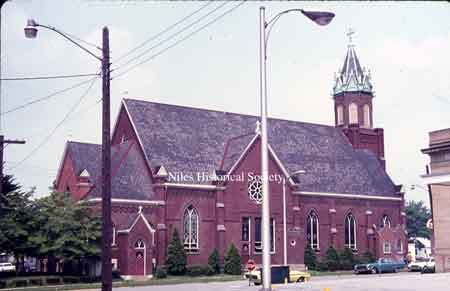
Photo of St. Stephen's Catholic Church as it looks today.
{kind=link}
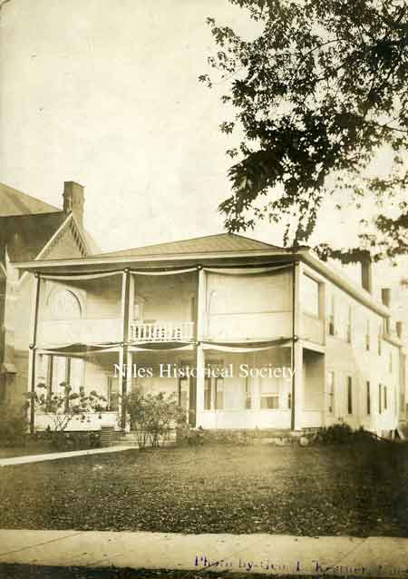
The original Parish House of St. Stephen's Church.

Unidentified St. Stephen's priest and pupils pose in this photo ca 1900.
{kind=link}
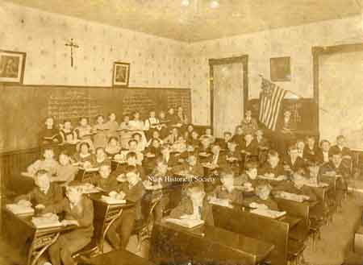
View of a grade school classroom and children attending St. Stephen's parochial school.

First grade at St. Stephen School in Niles, Ohio unknown date. possibly 1933.
{kind=link}
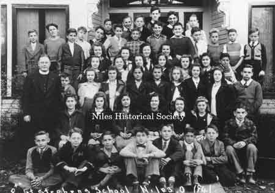
St. Stephen School 8th grade, 1941.
{kind=link}
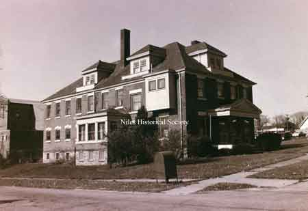
The Holy Humility of Mary convent which was located on the corner of Arlington and West State Street until the 1990's. These nuns taught at St. Stephen's parochial school.
{kind=link}
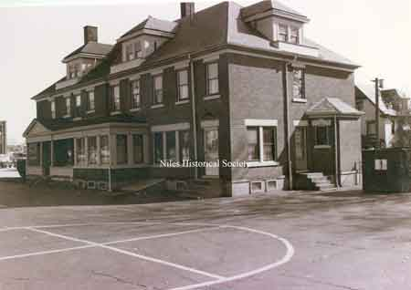
The Holy Humility of Mary convent which was located on the corner of Arlington and West State Street until the 1990's. These nuns taught at St. Stephen's parochial school.

View of the front entrance of the Holy Humility of Mary Convent on South Arlington Avenue

St. Stephen's Church on the southwest corner of West Park Avenue and South Arlington Avenue is a red brick building of Romanesque style.
{kind=link}
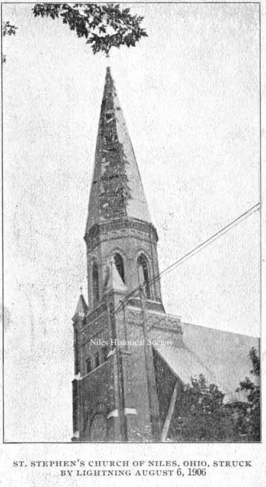
Original steeple of St. Stephen's Church was struck by lightning several times, this photo shows the damage when the steeple was struck in 1906.
{kind=link}
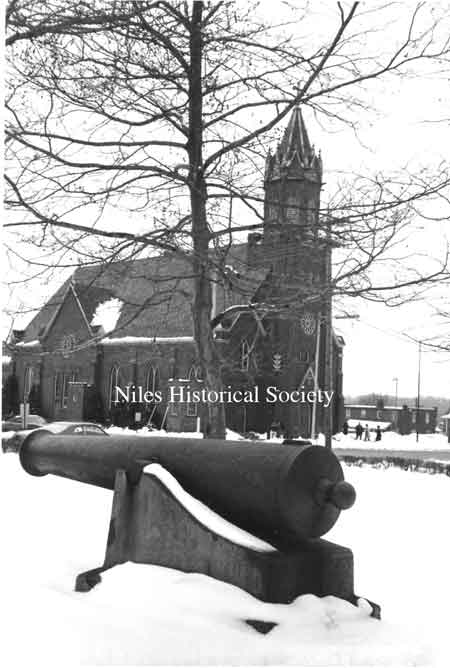
Photo taken of St. Stephen's Church from the lawn of the McKinley Memorial.

View of St. Stephen's Music Academy.

View of the old St. Stephen's School on South Arlington Avenue.

Demolition of the St. Stephen's School building in 1990.
{kind=link}
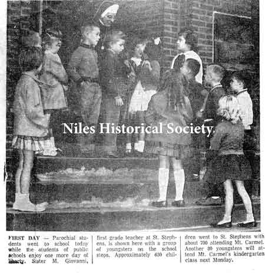
Niles Daily Times photograph
{kind=link}
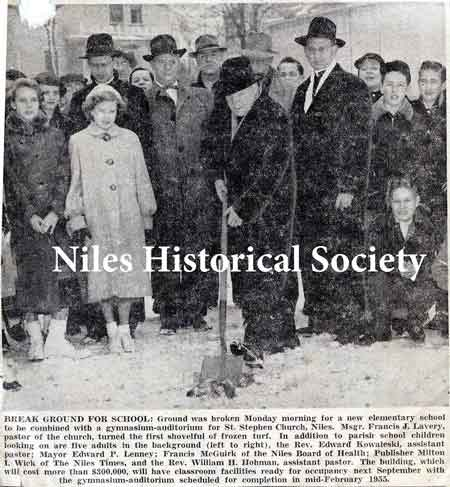
Niles Daily Times February 8, 1954 photograph

Niles Daily Times Photograph July 27, 1971

Aerial view of the downtown area with a red oval indicating the location od St. Stephen's block.

Construction of St. Stephen School.

St. Stephen School at the present time.